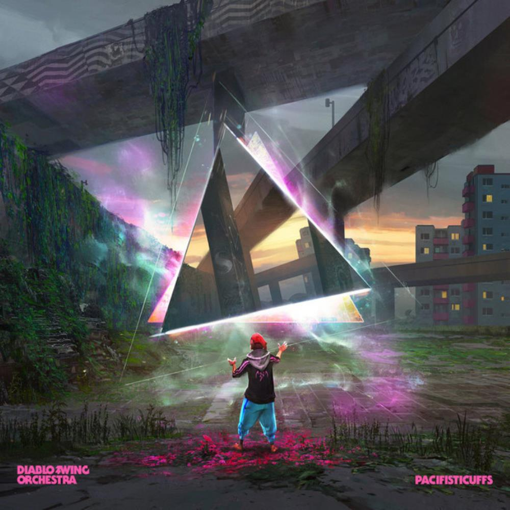

Debut y The Butcher's Ballroom /(2006-2009)
Fue formada en 2003 por Annlouice Loegdlund, los guitarristas Daniel Håkansson y Pontus Mantefors, el bajista Andy Johansson, el violonchelista Johannes Bergion y el baterista Andreas Halvardsson. Como una primera producción independiente, ese mismo año lanzan Borderline Hymns, un EP cuyas cuatro canciones se incluirían luego en su álbum debut. Ya en 2006, a través de la página de Myspace oficial de la banda ofrecen la descarga gratuita de una serie de canciones de su primer álbum, The Butcher's Ballroom. Las canciones que fueron publicadas en la página eran «Heroines», «Balrog Boogie» y «Poetic Pitbull Revolutions».[cita requerida] El álbum completo se ofreció gratuitamente en Jamendo a partir de julio de 2009. En julio de 2008, la banda tocó en el Summer Breeze Open Air en Alemania y en octubre de 2008 en el Metal Female Voices Fest en Bélgica.

Sing Along Songs for the Damned & Delirious (2009)
A principios de la primavera de 2009, la banda anunció que regresaba al estudio, e hizo una serie de video-blogs crípticos para documentar sus esfuerzos. El 30 de junio de 2009 fue anunciado que el arte de la cubierta para el nuevo álbum estaría a cargo del ilustrador sueco Peter Bergting, conocido por ser el autor de The Portent. La canción «A Tapdancer's Dilema» estuvo disponible a través del MySpace de la banda desde el 7 de julio de 2009. También anunciaron que dos ediciones especiales del álbum estarían disponible para pre-pedido, junto con el álbum regular. Ambas ediciones especiales venían en un digipak panel 8 que contenía el CD, un folleto de 12 páginas y un DVD de Bonus. La Edición Limitada Especial se restringió a sólo 300 pedidos, y vino con un paquete adicional de tarjetas postales, pegatina de vinilo y una placa de identificación en relieve con el logo de la banda y un número entre 1-300, única para el propietario. Sing Along Songs for the Damned & Delirious fue lanzado el 21 de septiembre de 2009. El 2 de octubre la banda tocó una concierto especial para el lanzamiento del álbum en The Purple Turtle club en Cadem, Londres.
Nueva formación y nominaciones (2010-2011)
El 18 de enero de 2010, Diablo Swing Orchestra anunció que su baterista, Andreas Halvardsson, dimitía de su cargo debido a "razones personales" y que a su vez, sería reemplazado por Petter Karlsson, quien es mejor conocido por su trabajo con el grupo sueco de metal, Therion. Igualmente, se anuncia la preproducción de su tercer álbum de estudio para finales de ese mismo año. La banda se presentó el 17 de julio de 2010 en el Circo Volador en Ciudad de México y el 14 de agosto de 2010 en Brutal Assault Open Air en República Checa con la nueva formación. En enero de 2011, Sing Along Songs for the Damned & Delirious fue nominado en la categoría de "álbum ecléctico" en la 10º versión anual de los Independent Music Awards. La canción «A Tapdancer's Dilema» también fue nominada, en la categoría "Metal/Hardcore". El 24 de enero de 2011, la banda anunció en su Facebook que Daniel Hedin y Martin Isaksson se unieron a la formación como miembros a tiempo completo.

Pandora's Piñata (2011–2014)
El 9 de octubre de 2011, la banda reveló el título de su tercer álbum de estudio: Pandora's Piñata. El 29 de marzo de 2011, la banda anunció en Facebook que Petter Karlsson dejó la banda por "no tener una mayor participación en la creación artística, y además, ganancia financiera limitada". El nuevo baterista fue Johan Norback, quien se uniría a la banda en la gira del año siguiente. También por Facebook, el 9 de abril de 2012, la banda lanzó el primer sencillo del nuevo álbum, «Voodoo Mon Amour». Del 24 de mayo al 2 de junio, se llevó a cabo una gira por América Latina, que comprendió conciertos en Colombia, Venezuela, Brasil, Argentina y México. El 5 de julio se anunció que estarían tocando en el Wacken Open Air Festival por primera vez. Cuatro días más tarde se declaró en su página de Facebook que visitarían Sudamérica una vez más en 2012, con planificación de conciertos en Venezuela, Chile y Perú. El 8 de enero de 2013 se lanzó el video de la canción «Black Box Messiah»
